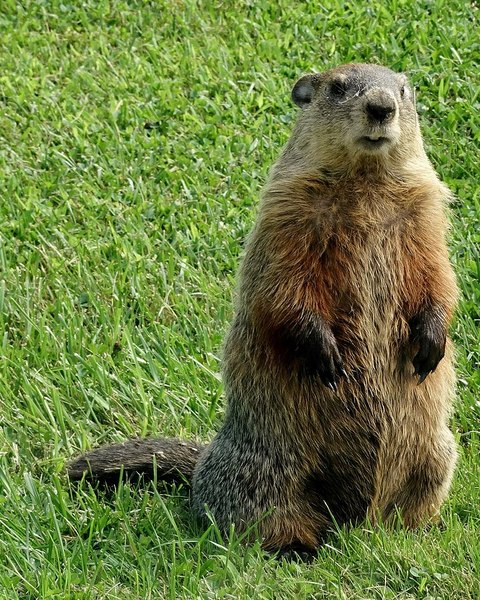
Делаем трек
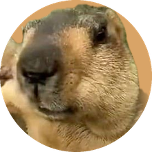
«Только Custom, не спорим»Suno пишет музыку по описанию: вы говорите словами, какой нужен трек, а через минуту получаете два варианта. Для роликов нужна музыка без голоса, поэтому всё ниже про инструментальные треки.
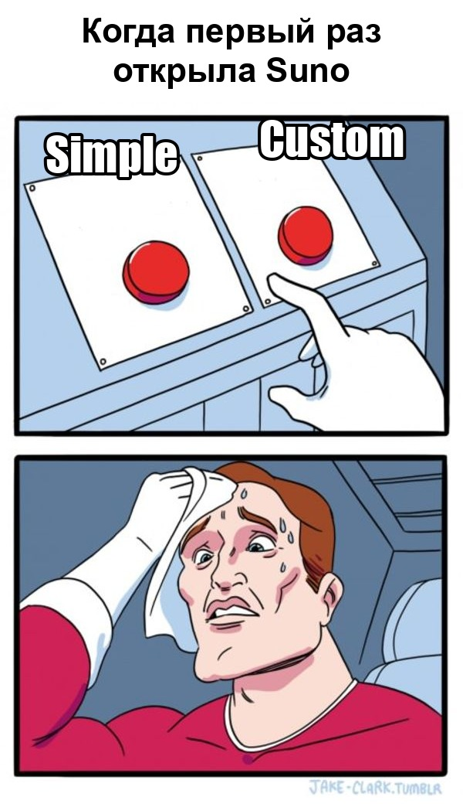
- 1Войдите на сайтОткройте suno.com и нажмите Sign in в правом верхнем углу. Проще всего через Google.
- 2Откройте создание трекаВ меню слева нажмите Create.
- 3Включите расширенный режимВверху окна переключитесь с Simple на Custom. Здесь можно точно задать, какая нужна музыка.
- 4Выберите модельРядом поставьте v6: это самая новая версия.
- 5Самый важный шаг: уберите голосВключите переключатель Instrumental, чтобы в треке не было пения.
Instrumental
- 6Опишите музыкуВ поле Style вставьте описание на английском. Готовые варианты в разделе 02, их можно просто скопировать.
- 7Скажите, чего не надоВ поле Exclude Styles напишите
vocals, choir, то есть «без голоса и без хора». - 8Подпишите трекВ поле Title напишите понятное название, например «Тизер Аня — вариант 1».
- 9ЗапуститеНажмите Create внизу. Через минуту справа появятся два варианта.
- 10Послушайте и повторитеНажмите на обложку, чтобы послушать. Не то? Ещё раз Create. Обычно хороший вариант получается с 3–5 попытки.
- 11Отметьте лучшийПоставьте лайк понравившемуся треку, чтобы не потерять его среди остальных.
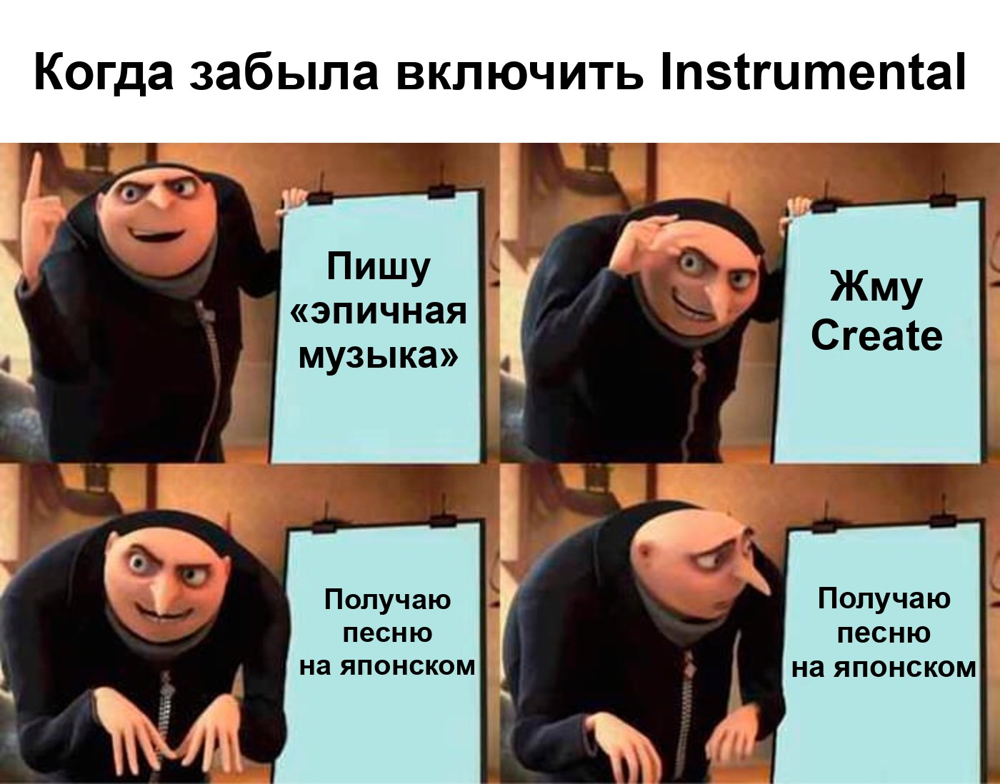
Бонус для поля Lyrics. Для музыки без голоса его можно не заполнять. Но если вписать план трека, музыка будет сначала нарастать, а потом «взрываться»:
[Intro] спокойное начало [Build] нарастание [Drop] самая яркая часть [Outro] концовка
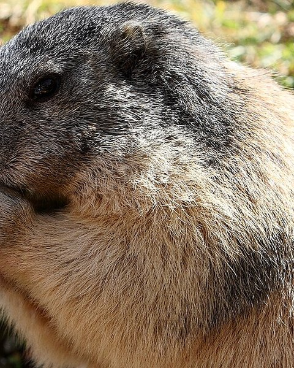
Готовые стили
«Скопируй и не мучайся»Нажмите «Скопировать» и вставьте строку в поле Style целиком. Число с bpm — это темп: чем больше, тем быстрее музыка.
Для йоги и спокойных тренировок
Ровный темп без резких ударов и «взрывов», чтобы музыка не сбивала дыхание и не спорила с голосом ведущей. В поле Exclude Styles вставьте то, что указано под каждым описанием.
Плавная практика
calm yoga flow, soft ambient, warm pads, gentle acoustic guitar, light hand percussion, 70 bpm, steady, peaceful, backgroundvocals, heavy drums, dropsМягкое бодрое утро
morning stretch, uplifting, light acoustic, soft piano, airy pads, gentle shaker, 85 bpm, fresh, positive, backgroundvocals, electric guitar, dropsТишина и дыхание
meditation ambient, slow, deep calm, singing bowls, soft drones, nature sounds, 60 bpm, spacious, minimalvocals, drums, percussionМягкий восточный колорит
oriental ambient, handpan, bansuri flute, soft tabla, warm pads, 75 bpm, serene, flowing, backgroundvocals, chanting, heavy bassУпражнения в ровном ритме
light workout, gentle groove, soft electronic, warm bass, steady kick, 95 bpm, motivating, positive, even tempo, backgroundvocals, aggressive, drops, dubstepОтдых в конце занятия
relaxation, soft piano, gentle strings, slow, warm, 55 bpm, peaceful ending, minimal, emotionalvocals, drumsТизеры, рилсы, истории
Напряжение и мощные удары
modern trailer, epic hybrid, tense build, pounding drums, braams, risers, 120 bpm, cinematic, big hitsДинамично и бодро
electro trap, energetic, heavy 808 bass, punchy drums, sidechain, 140 bpm, modernСпокойная подложка под речь
minimal corporate electronic, calm, confident, soft plucks, light kick, 100 bpm, background, no lead melodyЛёгко и светло
chill pop, warm, bright, soft guitar, finger snaps, 105 bpm, airy, modernТепло и с эмоцией
emotional piano, cinematic strings, slow build, hopeful, 80 bpm, warmСобрать самой
Пишите слова через запятую в таком порядке, на английском:
Suno сильнее слушает то, что написано в начале. Имена исполнителей писать нельзя: описывайте звучание словами.
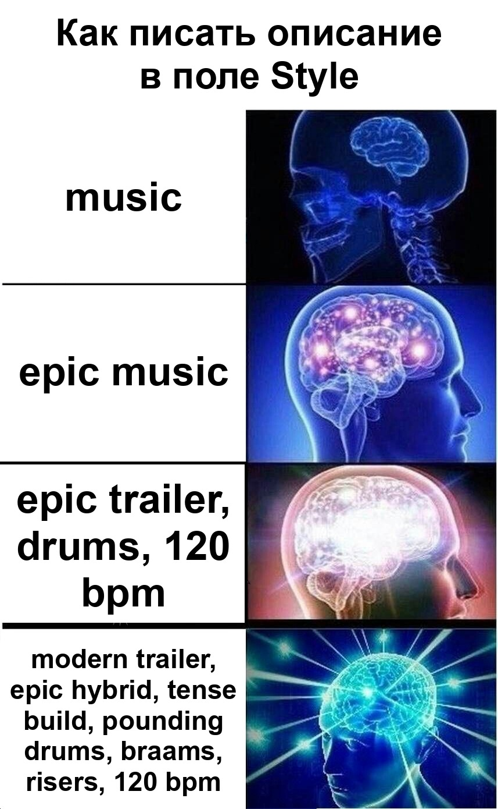
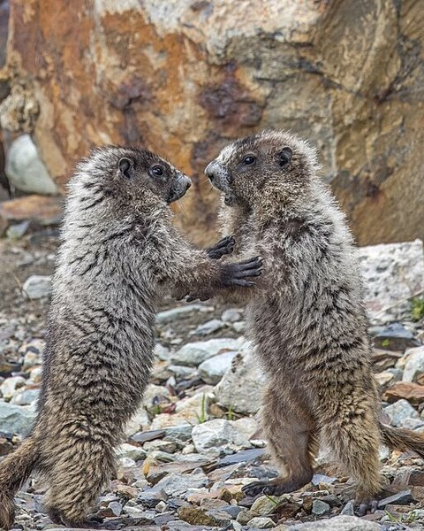
Если почти нравится
«Не выбрасываем, докручиваем»Все эти кнопки в меню трека: нажмите на три точки ⋯ рядом с ним. Пункты часто лежат в подменю Remix/Edit или Create.
Выберите Extend, укажите секунду, с которой продолжить, и нажмите Create. Suno допишет продолжение в том же стиле.
Выберите Replace Section и выделите неудачный кусок на волне. Пересоздастся только он, остальное останется как было.
Выберите Cover, впишите новый стиль и нажмите Create. Мелодия останется похожей.
Выберите Get Stems: трек разложится на дорожки (барабаны, бас, мелодия), и в монтаже мелодию можно сделать тише.
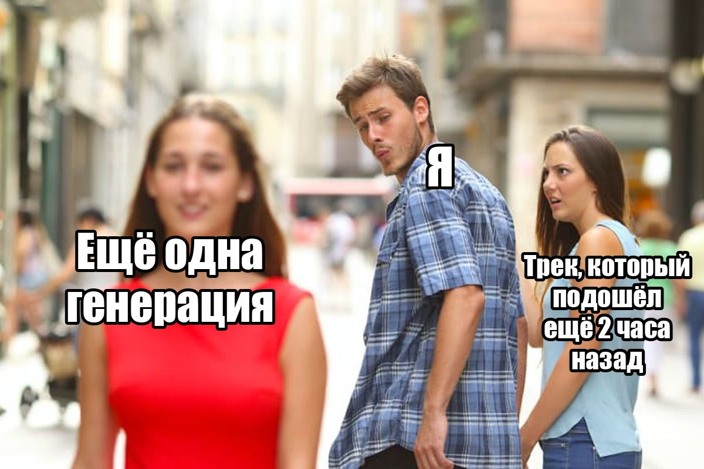
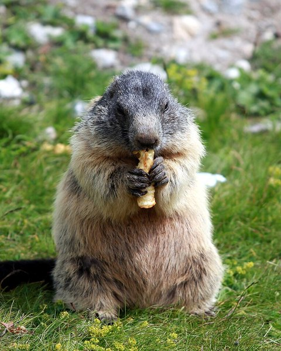
Скачать и передать
«Качаем только утверждённое»- 1Откройте меню трекаНажмите на три точки ⋯ рядом с выбранным треком.
- 2СкачайтеВыберите Download, затем WAV Audio: у него лучшее качество. Если WAV нет, подойдёт MP3.
- 3ПереименуйтеФайл окажется в «Загрузках». Дайте ему понятное имя, например «Тизер Аня — вариант 2.wav».
- 4ОтправьтеПришлите файл Илье или положите в общую папку проекта.
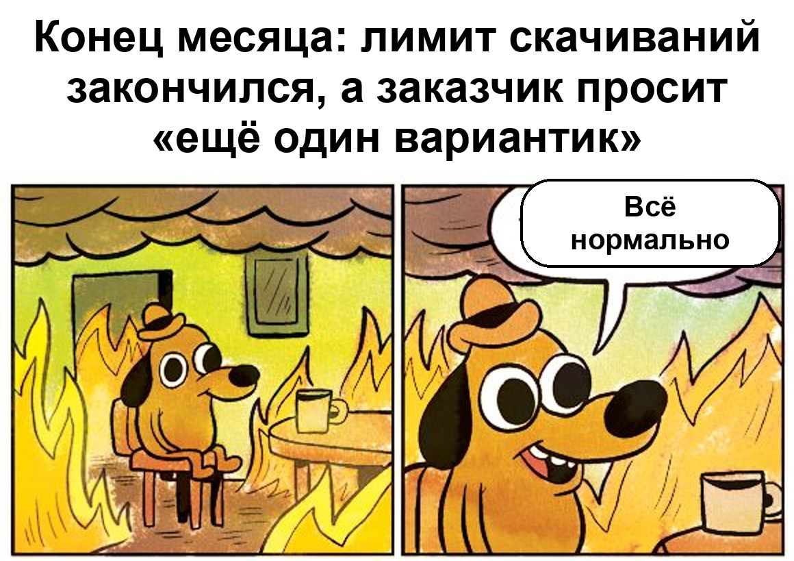
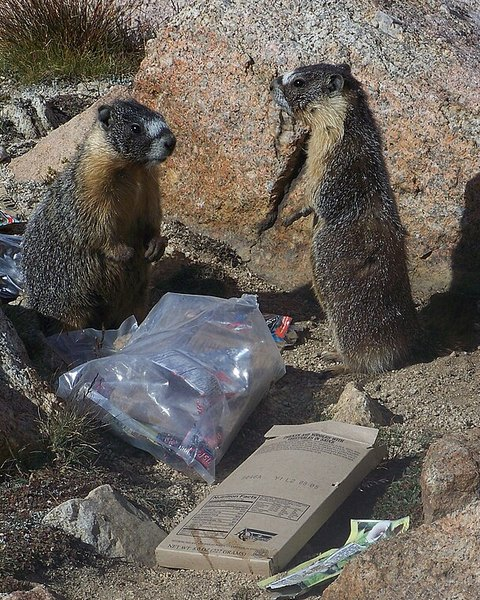
Можно и нельзя
«Короче, запоминаем»Стоит
- Всегда работать в Custom и включать Instrumental, если не просили песню.
- Делать 3–5 попыток и выбирать лучшую.
- Слушать трек целиком: в середине бывает лишний голос или странный звук.
- Называть треки понятно: проект и номер варианта.
- Присылать на выбор 2–3 варианта ссылками.
- Делать трек чуть длиннее ролика: лишнее легко обрезать.
Не стоит
- Писать в Style имена исполнителей и названия песен: сервис не примет.
- Писать описание по-русски: на английском результат точнее.
- Перегружать описание: хватит 6–10 слов.
- Скачивать все варианты подряд: лимит скачиваний.
- Брать чужие треки из раздела Explore: права у их авторов.
- Регистрировать треки как свою музыку на YouTube или в стримингах.
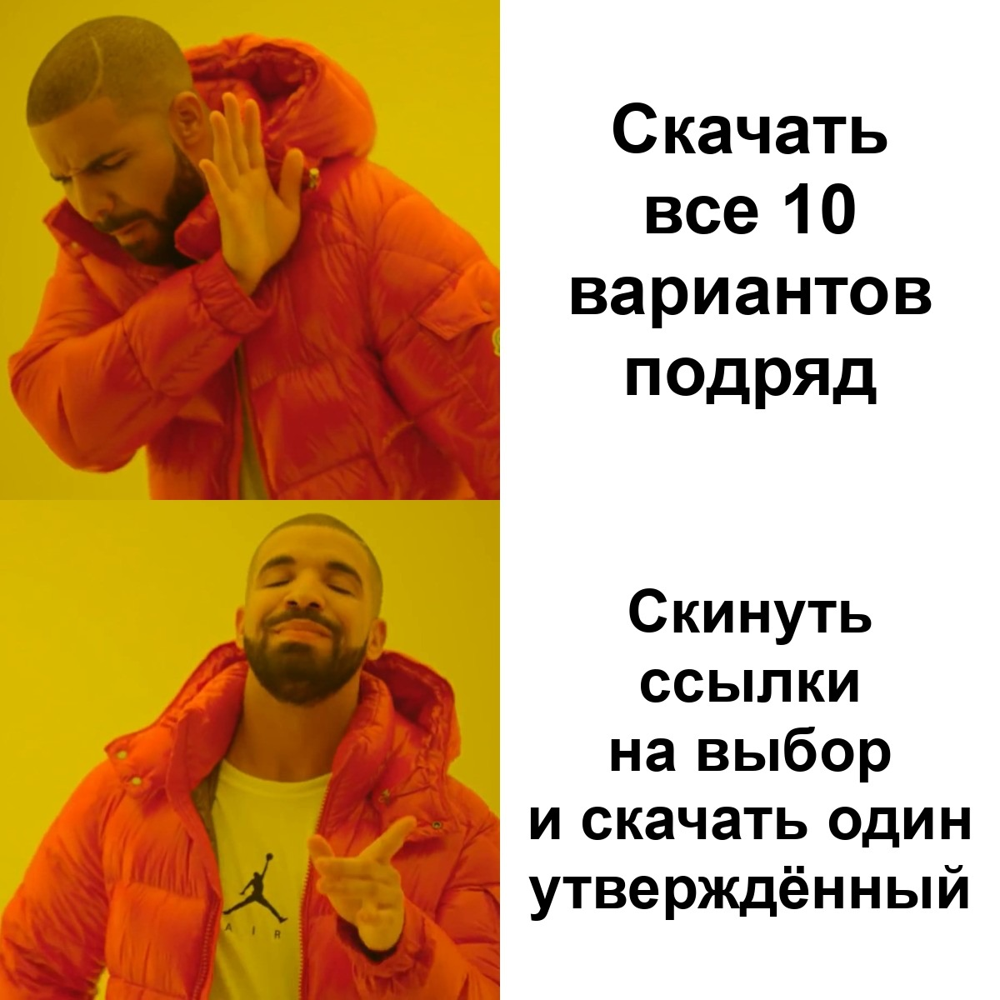
Чек-лист перед отправкой
«Прошлась — и отправляй»Сурки одобряют
«Узнали себя?»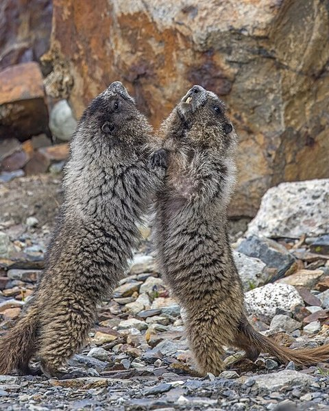
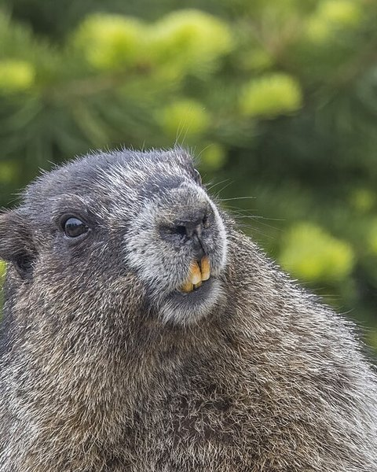
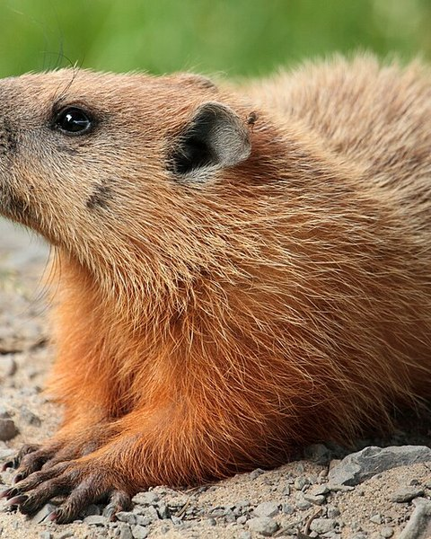
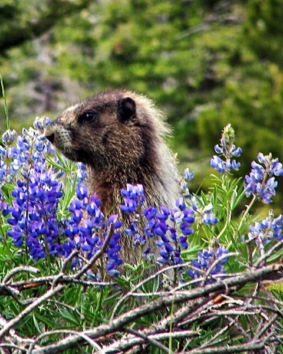
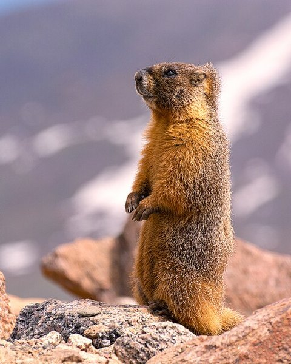
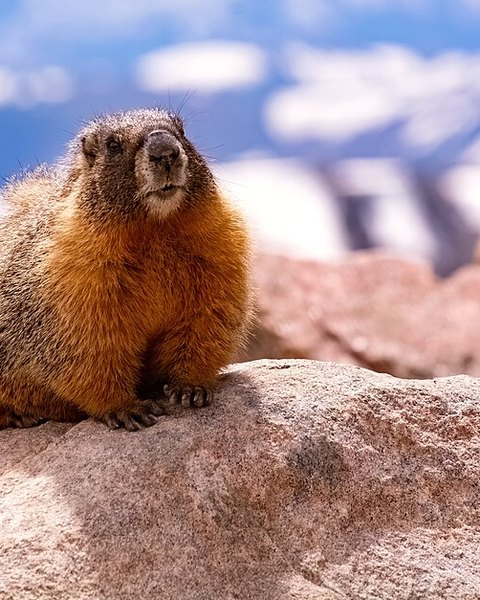